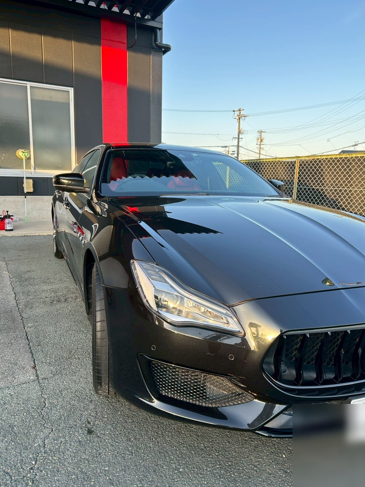

豊橋市は海に近く、地域によっては塩分を含んだ潮風がボディに付着します。塩分は水分と一緒に残ると金属部分に影響しやすいため、洗い流したあとに保護膜を乗せておくことに意味があります。
そのため豊橋市では、洗車にボディ保護コーティングが含まれる PREMIUM をおすすめしています。約1ヶ月持続し、次の汚れも落ちやすくなります。
もちろん洗車だけの BASIC も承ります。お車の保管状況（屋根の有無、海までの距離）をお聞かせいただければ、必要なコースをお伝えします。不要なものはおすすめしません。
下記は一例です。記載のない地区でも豊橋市内であればお伺いしますので、まずはご住所をお聞かせください。
表示はすべて税込。お車のサイズで決まります。2台以上の同時お申し込みで出張費は無料です。
| サイズ・該当車種 | Basic洗車のみ | Premium＋コーティング | Special＋車内 or 磨き |
|---|---|---|---|
| S軽自動車・コンパクトカー N-BOX、タント、ヤリス、フィット など | ¥2,900 | ¥4,900 | ¥10,900 |
| Mセダン・SUV・ステーションワゴン クラウン、カローラ、ヴェゼル、CX-30 など | ¥3,900 | ¥6,900 | ¥12,900 |
| Lミニバン・大型SUV アルファード、ハリアー、ランドクルーザー、RAV4 など | ¥4,900 | ¥8,900 | ¥14,900 |
| XL大型輸入車・商用車 メルセデス Sクラス、ハイエース、大型輸入SUV など | ¥5,900 | ¥9,900 | ¥16,900 |
実際にご依頼いただいたお客様のお車です。ご自宅や職場の駐車場で、一台ずつ手洗いで仕上げています。




洗車にボディ保護コーティングが含まれる PREMIUM をおすすめしています。潮風で付着した塩分を洗い流したあと、保護膜を乗せておくことで次の汚れも落ちやすくなります。約1ヶ月持続します。
2台以上の同時お申し込みで出張費は無料です。1台のみの場合はご住所までの距離に応じてご案内いたしますので、ご予約前に金額をお伝えします。
表面に付着した汚れや水垢は落とせますが、すでに塗装の下まで進行した錆は洗車では改善できません。作業前の状態確認で、どこまで改善が見込めるかを正直にお伝えしてから始めます。